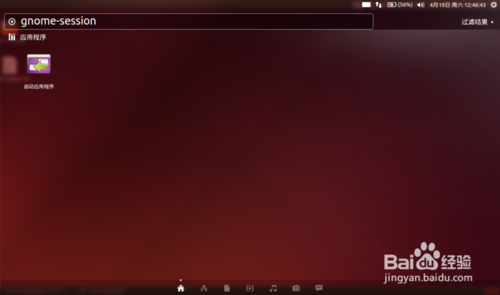
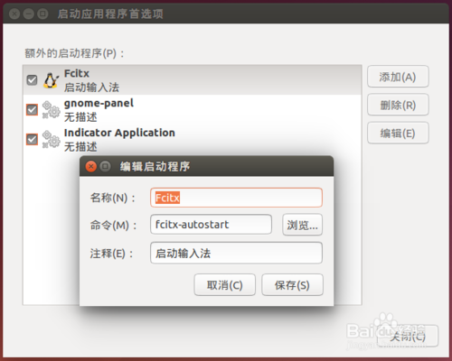

Ubuntu中怎样添加开机启动项听语音
- |
- 浏览：8152
- |
- 更新：2014-04-19 13:51
- |
- 标签：ubuntu
在windows中我们可以很轻松地添加程序到随开机启动项中，可以是开始菜单附后中的启动目录，也可以使用注册表或服务的形式来添加，然而在Ubuntu操作系统中我们也完全可以这么做。
本文以 Ubuntu 14.04 LTS为例，我们在gnome-session图形界面中添加随开机启动项。
方法/步骤
- 1
在Dash菜单中搜索gnome-session，找到并启动，如下图：
 - 2
在这里就可以对随开机启动项做添加/编辑/删除的各项操作了，当前也可以去掉前面的勾禁止它启动，要的时候可以再勾上——这是个不错的选择哦！
END
经验内容仅供参考，如果您需解决具体问题(尤其法律、医学等领域)，建议您详细咨询相关领域专业人士。
举报作者声明：本篇经验系本人依照真实经历原创，未经许可，谢绝转载。
投票(11)
有得(0)
我有疑问(0)
换一批相关经验
- win7与ubuntu14.04双系统下修改默认启动项582014.08.07
- 修改 ubuntu 默认启动项212013.04.27
- 修改ubuntu14.04与windows 7双系统的默认启动项62015.01.12
- ubuntu下grub引导时，修改系统的启动项书匈奴02014.10.21
- 怎么通过修改注册表添加QQ开机启动项？02013.11.14
相关标签ubuntu
今日支出元
写经验 有钱赚 >>